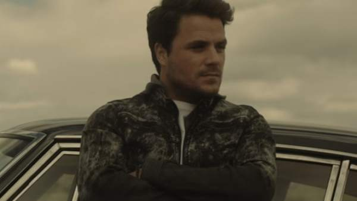

Próximos Lanzamientos
La banda británica The Rolling Stones publicará una recopilación de 15 vinilos con sus grandes éxitos el próximo 15 de junio, según informó la discográfica Universal.
Bajo el nombre The Studio Albums Vinyl Collection 1971-2016, los Rolling Stones harán un repaso de su trayectoria a lo largo de más de 40 años en una caja de edición
limitada que incluirá 15 álbumes de estudio.
Figuran entre ellos desde el clásico Sticky Fingers, con la portada de la cremallera diseñada por el artista Andy Warhol,
hasta el último Blue & Lonesome, lanzado en 2016, pasando por joyas como It's Only Rock'n'Roll y Voodo Lounge, de 1974 y 1994, respectivamente.
Los discos han sido remasterizados a
partir de cintas originales para obtener el mejor sonido posible en los míticos estudios londinenses de Abbey Road, donde, por ejemplo, los Beatles grabaron su último disco.
Cada álbum está prensado en vinilo negro de 180 gramos e incluye una tarjeta de descarga para su escucha en digital, además de un certificado de autenticidad.
Los discos incluidos son los siguientes: Sticky Fingers (1971); Exile On Main St (1972); Goats Head Soup (1973); It's Only Rock'n'Roll (1974); Black And Blue (1976);
Some Girls (1978); Emotional Rescue (1980); Tattoo You (1981); Undercover (1983); Dirty Work (1986); Steel Wheels (1989); Voodoo Lounge (1994); Bridges To Babylon (1997);
A Bigger Bang (2005) y Blue & Lonesome (2016). Esta primavera, los Rolling Stones girarán por primera vez en el Reino Unido desde 2006, con actuaciones programadas para el 17
de mayo en Dublín; para el 22 de mayo en Londres; el 5 de junio, en Manchester; el 9 de junio, en Edimburgo; el 15, en Cardiff (Gales), y el 19 en el estadio de cricket de Twickenham,
en Londres.
Una nueva caja recopilatoria permitirá disponer a partir del próximo 18 de mayo de los LP que Bruce Springsteen
publicó entre 1987 y 1996 y que llevan tiempo descatalogados, en una edición limitada y remasterizada por primera vez en vinilo.
Así lo ha avanzado hoy Columbia Records, en conjunción con Legacy Recordings, que gracias a Bruce Springsteen: The Album Collection Vol. 2, 1987-1996
pondrá otra vez en circulación álbumes como Tunnel of love, Human Touch, Lucky Town y The Ghost of Tom Joad.
Los dos primeros aparecerán ampliados al formato de doble LP para "maximizar la calidad del audio", que ha sido cuidado por el ingeniero Bob Ludwig
y el colaborador de siempre del Boss, el ingeniero Toby Scott.
Además, de los cuatro álbumes de estudio publicados en esos años, el recopilatorio incluirá un especial de 12 pulgadas del EP
en directo de 1988 Chimes of Freedom, el LP doble de Springsteen de 1993 MTV Plugged y el primer lanzamiento en vinilo del EP de 1996 Blood Brothers.
Otros lanzamientos
Esta colección llegará al mercado tras el lanzamiento de 2014 con el título Bruce Springsteen: The Album Collection Vol. 1, 1973-1984,
que incluía ediciones remasterizadas de los primeros siete álbumes de estudio del músico de Nueva Jersey. Los diez discos que componen esta colección
vienen presentados en reproducciones de las portadas originales, acompañados de un libro de 60 páginas con fotos poco conocidas, objetos de interés y
noticias de prensa originales de aquel periodo.
- Esta edición 'deluxe' saldrá a la venta el 10 de noviembre, pero está disponible en plataformas digitales desde este viernes.
- Es una recopilación de canciones y temas inéditos en dos formatos: CD+DVD y Vinilo+DVD.
- 'Grandes éxitos y pequeños desastres' es el título de la próxima gira de Dani Martín de 2018,
en la que recorrerá todos los 'hits' de su carrera.

El 10 de noviembre sale a la venta Grandes éxitos y pequeños desastres con todos los discos y demos inéditas del cantante Dani Martín.
A partir de este viernes estará disponible en las plataformas digitales.
Se trata de una edición deluxe que se presentará en dos versiones: CD+DVD y en Vinilo+DVD y que incluirá su discografía, más nueve temas rarezas
y demos inéditas.
En el formato CD la caja incluye los álbumes: Pequeño, pequeño...(Tesoro), Dani Martín, Mi Teatro (también en DVD),
La montaña rusa y Pequeños desastres con temas que no han sido escuchados hasta ahora. Mientras que el vinilo contiene
los singles en 7 pulgadas: Los charcos, Cero y Que se mueran de envidia.
La nueva edición deluxe lleva el mismo nombre de la gira de 2018 que iniciará Dani Martín, en la que recorrerá todos sus grandes éxitos
durante sus 18 años de carrera musical hasta su último disco lanzado, La montaña rusa.